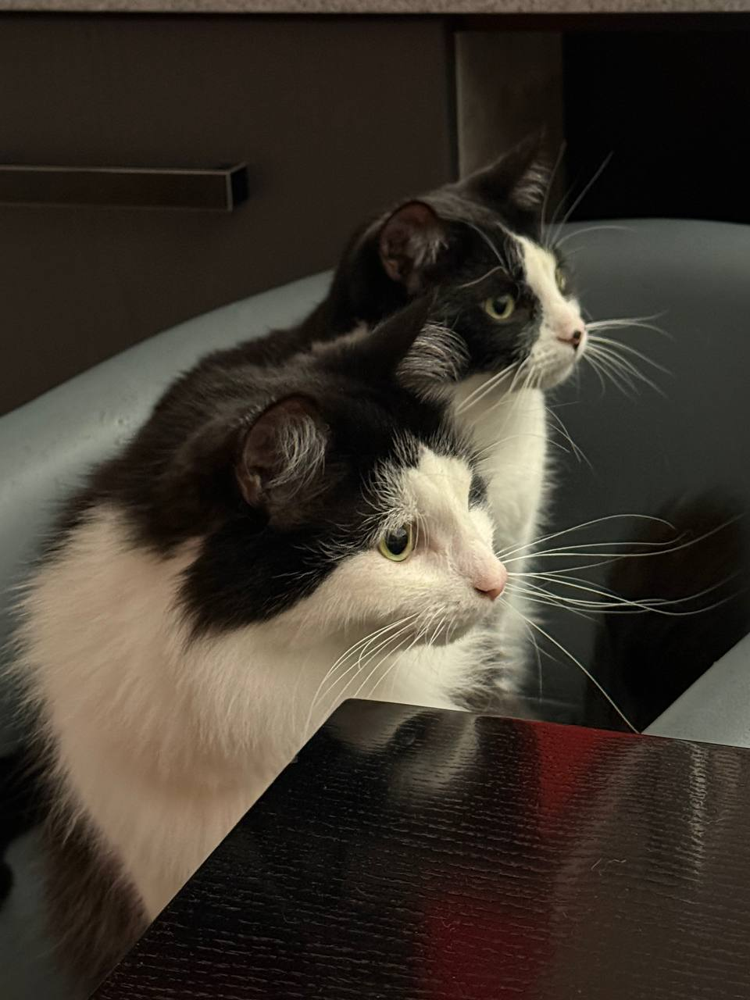

Profile
My name is Stasy, and I am a junior web developer.
Education
I have a Bachelor's degree in Cybersecurity from Lviv Polytechnic National University 2022-2026.
Skills
- Cybersecurity: analysis and searching for vulnerabilities, basic security testing
- Web Development: HTML, CSS, JavaScript
- Operating Systems: Linux, Ubuntu, Kali Linux
- Instruments: Burp Suite
- Programming Languages: Python, C++
- Database Management: MySQL, T-SQL
- Soft Skills: communication, teamwork, leadership skills, organization work for projects
Experience
- Project - Project Manager
- Organization and management work of the command project
- Division tasks, control execution and communication with team members
- Website using PHP and MySQL
- Development own website with server-side scripting on PHP
- Project and work with database MySQL
- Realization of direction between web application and database
- Resume-website
- Development of a personal resume website
- Creation structure and design of the website by HTML and CSS
- Using JavaScript for interactive elements
- Adaptation design and structure of the website for user-friendly interface
- Cybersecurity practice
- Analysis and searching for vulnerabilities
- Work using Kali Linux and instruments for security testing
- Meeting with methods of detection and assessment potential vulnerabilities of web applications
Hobbies
In my free time, I enjoy dancing, reading, and watching movies. Also I like animals very much and have little dog Barney and cats: Rocky, Felix and Mars.
Barney

Barney is a small dog, he is very playful and loves to run and play with his ball. He is very clever and he knows many tricks. Also he likes to sleep and he is afraid of our cats:)
Rocky

Rocky is the oldest of the three cats and is very independent. My stepfather brought him in from the street in the rain when he was a kitten.He enjoys lounging in sunny spots and wallowing in the dust.
Felix and Mars

Felix and Mars are two brother cats. I found them by the roadside in late autumn. They are very tame, but they fight among themselves when they are hungry.